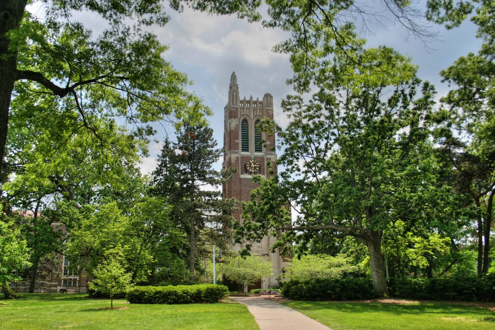
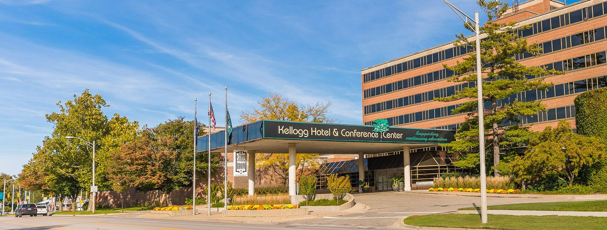
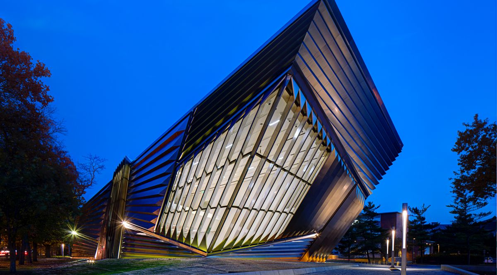
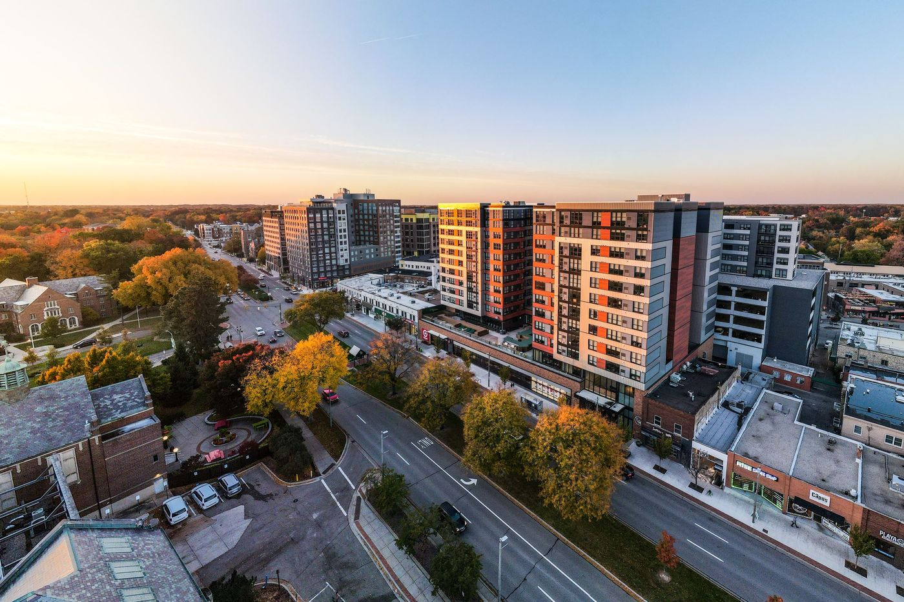

23rd edition · Hosted by Michigan State University
ISAP 2027International Conference on Intelligent Systems Applications to Power Systems
Trustworthy Intelligence for Resilient and Autonomous Power Systems
- When
- September 12–15, 2027
- Where
- Kellogg Hotel & Conference Center, Michigan State University, East Lansing, Michigan, USA

Key datesAdd the dates to your calendar
- December 15, 2026Paper submission opensNext
- February 28, 2027Full paper submission deadlineNext
- April 30, 2027Notification of acceptanceNext
- June 15, 2027Revised paper submission deadlineNext
- July 15, 2027Early-bird registration deadlineNext
- September 12–15, 2027Conference in East LansingNext
Invitation
Join ISAP 2027 at Michigan State University
Michigan State University is proud to host the International Conference on Intelligent Systems Applications to Power Systems (ISAP 2027). The conference invites researchers, practitioners, and students to submit original contributions on intelligent systems for electric power and energy systems.
For more than three decades, ISAP has brought the power systems and intelligent systems communities together to discuss the operation, control, planning, and maintenance of interconnected and isolated grids. The program will include tutorials, workshops, plenary sessions, technical paper sessions, and panel discussions.
Students are encouraged to present their work. The organizers are pursuing reduced student registration and travel support.
About ISAP
Since 1994, ISAP has brought together power engineering and artificial intelligence, following the field from expert systems and neural networks to today's foundation models. ISAP 2027 is the 23rd edition of the series.
Accepted papers will be published in IEEE Xplore, subject to presentation at the conference.
Call for Papers
Eight technical tracks
Contributions are sought on intelligent systems approaches of every kind for the planning, operation, control, and protection of power and energy systems, from generation to grid-edge resources and markets. Topics in each track
Foundation Models and Generative AI for Power and Energy Systems
Physics-Informed and Trustworthy AI for Power System Operation and Planning
Intelligent Control and Optimization of DERs, EVs, and Grid-Edge Resources
AI for Power System Resilience, Reliability, and Extreme Events
Digital Twins and Autonomous Agents for Future Power Systems
Large Loads, AI Data Centers, and Grid Integration
Cyber-Physical Security and Privacy-Preserving Intelligence
Machine Learning and Data-Driven Methods for Power Systems
Venue
Kellogg Hotel & Conference Center
The conference takes place on the Michigan State University campus, where the meeting rooms, guest rooms, and dining share one building. Downtown East Lansing, the Broad Art Museum, and the trails along the Red Cedar River are a short walk away. Venue and travel

- 35,000+
- square feet of event space
- 32
- meeting and banquet rooms
- 160
- guest rooms and suites on site
- 15–20 min
- by car from Lansing airport (LAN)





Organizers
Hosted by Michigan State University
ISAP 2027 is organized by the Department of Electrical and Computer Engineering in the College of Engineering at Michigan State University.
Further committee members will be announced.
Stay informed
Receive ISAP 2027 announcements
Announcements cover the opening of paper submission, deadline changes, the program, and registration.
The address is used only for ISAP 2027 announcements.